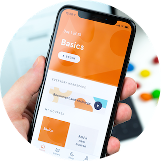

I have been working in IT and telecommunication software industry for more than 15 years with multiple roles - system administrator, project engineer, project manager and software developer.

Specialized in design and develop fully-featured, state of the art and great looking mobile application running on iOS or Android. Provide end-to-end solution from initial design, wireframe, prototype, implementation to final product launch the public. Take advantage of the latest development in mobile technology and exploit the potential within it.
Full stack web site development with deep understanding of backend and frontend technologies. Familiar with MySQL and NoSQL databases, experienced in PHP, Python, JavaScript, HTML and CSS programming. Pay attention to the usability and friendliness of the website and balance with great looking and simple UI.
Experienced in Java business application development, refactor and new features add-on for existing product. Automation with shell scripting and languages using Python and Ruby. Implement mediated solution for integrating different products. Services availability with monitoring tools such as Nagios and Cacti.
Familiar with various IT services implementation, deployment and operation, such as cloud computing or storage using Amazon AWS, Heroku, web and email hosting with external service providers. In-house Linux server and services implementation and deployment using Red Hat Enterprise Linux. Firewall and networking configuration using OpenBSD.
© 2026 Lee Choon Siong